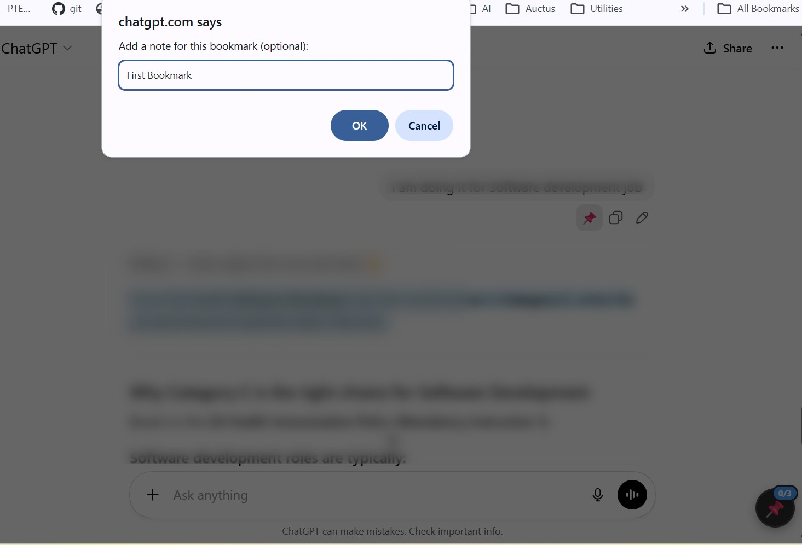

Bookmark Important AI Chat Messages
Save, organize and instantly jump back to key moments in ChatGPT, Claude, Gemini and Copilot conversations.

Why AI Chat Bookmarks?
AI conversations are getting longer and more complex.
Scrolling endlessly to find one important insight wastes time.
✔ Bookmark your own messages instantly
✔ Add personal notes for context
✔ Search through saved bookmarks
✔ View all your questions in one place
✔ Jump back to any message with one click
✔ 100% free & privacy-first
How It Works
1. Hover over YOUR message in a supported AI chat.
2. Click the 📌 icon to bookmark it.
3. Add an optional note (up to 500 characters).
4. Open the floating sidebar to view bookmarks.
5. Click any bookmark to scroll directly to that message.
New: Use the “All Messages” tab to see every question in chronological order.
Supported Platforms
ChatGPT • Claude AI • Google Gemini • Microsoft Copilot
Privacy First
Your conversations never leave your browser.
✓ Everything stored locally
✓ No external servers
✓ No analytics
✓ No tracking
✓ No accounts required
Perfect For
• Developers saving debugging solutions
• Researchers organizing AI insights
• Students tracking study notes
• Writers collecting ideas
• Anyone navigating long AI conversations